10.4 追踪内存泄漏
排查内存泄漏问题是个技术活儿，通常会交叉使用多种工具和技术。有时候，应用程序会意外持有无用对象的引用，而且若被泄露的内存分别在不同的地方分配和持有，则排查起来就更加困难，因此需要详细分析才能找到内存泄漏的真正根源。
启动 Memleak只需在JRockit Mission Control的 JVM Browser视图中，右键点击目标JVM，选择 Memleak即可。
同一时间，只能有一个Memleak连接到目标JVM上。
在Memleak中，Trend Table可用于检测是否有潜在的内存泄漏，其具体实现是通过定期构建应用程序中各类型对象实例数量的直方图，再经过对比判断来实现的。针对各类型实例所占用内存做最小二乘拟，并"字节/每秒"为单位显示内存增长率。
在JRockit Mission Control 4.1.0版本中，该算法会相对复杂一点，它需要整合存活对象集的数量。若某些类型的实例的随存活对象集大小的增长曲线相匹配，则很可能是在这些类型上出现了内存泄漏。
趋势表（Trend Table）常用于查找内存泄漏的根源。在趋势表中，增长率很高的类均以红色显示，还可以显示出相关实例的数量和占用的内存。
从下面的截图中可以看出，很有可能是字符数组发生了内存泄漏。在截图中，字符数组以深红色表示，处于趋势表的顶部，增长率位居首位。
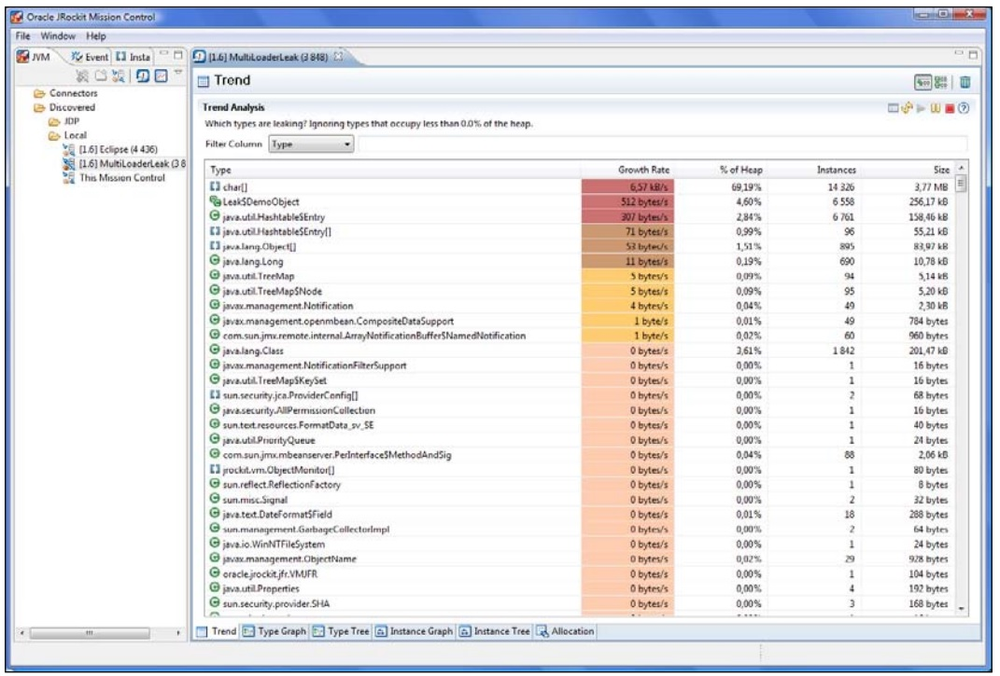
此外，Leak$DemoObject和Hashtable类型的示例也正发生内存泄漏，只不过严重程度稍低而已。
总体来看，内存泄漏的速率为7.5KB/s。
(6.57*1,024+512+307+71+53+11)/1,024 ≈ 7.5JVM堆的最大值为256MB，已使用的存活对象集为20MB（该数值可以在Management Console中查到）。
(256 – 20) *1,024 / 7.5 ≈ 32,222 seconds ≈ 537 minutes ≈ 22 hours照此下去，在22小时后，应用程序就会因OutOfMemoryError错误而崩溃。
嗯，还有一段时间可用来查找内存泄漏的根源。右键点击趋势表中的字符数组，选择 Add to Type Graph菜单，如下图所示：
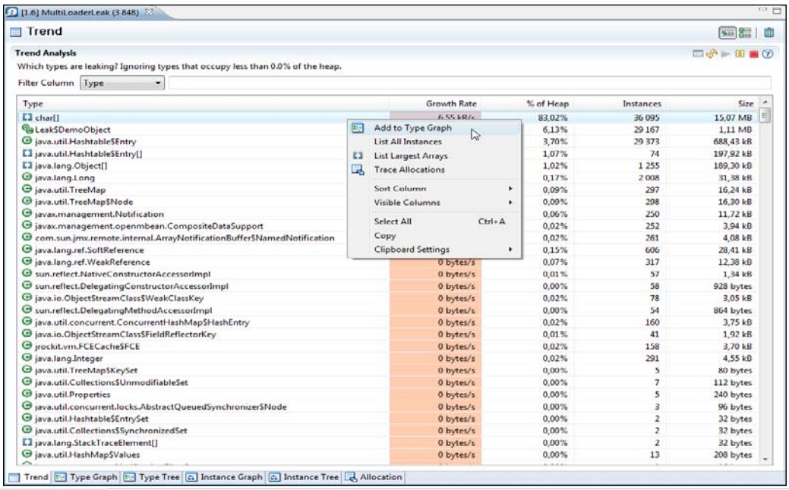
这样，就会将字符数组类型加入到 Type Graph标签页，并自动切换到该标签页。Type Graph标签页中并不是显示类型的继承关系图，而是显示实例之间的引用关系图，并且只会显示被选中的类型的实例。如下图所示：
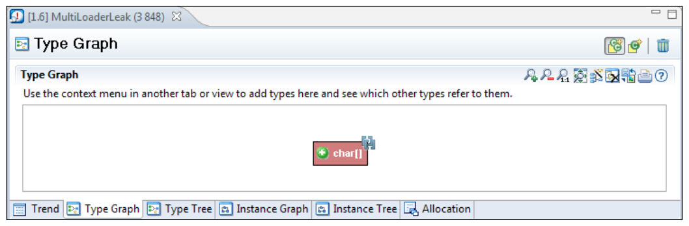
点击类型名左侧的绿色加号，会显示出有哪些类型包含指向该类型的引用。每次点击类型名左侧的加号都会扩展出其他几个节点，其中包括了泄漏内存最多的类型。
与趋势表类似，在 Type Graph中，增长过快的类型也以深红色进行表示
在这个示例中，若想找出到底是哪些对象引用了字符数组，则需要展开字符数组节点：
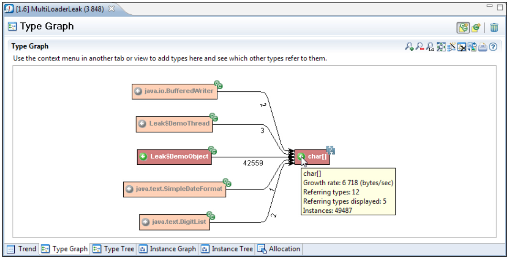
展开字符数组后，只有一种类型是疑似内存泄漏的，即Leak类的内部类DemoObject。
继续展开Leak$DemoObject类及其展开的子类型，直到发现应用程序可能在滥用Hashtable类，如下图所示：
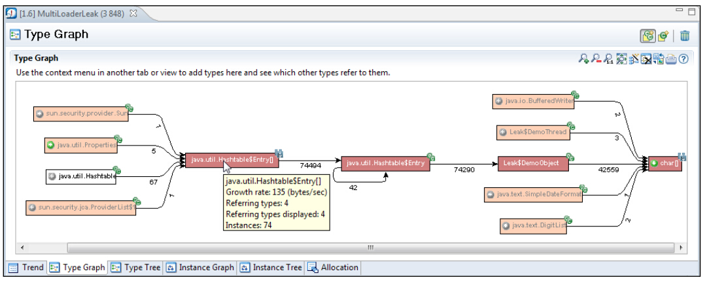
接下来，需要找出到底是哪个Hashtable对象被误用了。这有多种实现方法。在本例中，由于基本确定了Leak$DemoObject发生了内存泄漏，因此只需要列出有哪些Hashtable$Entry类的实例指向Leak$DemoObject实例即可。
Java中的内部类（例如
Hashtable类中的Entry类）在字节码中是以OuterClass$InnerClass这种格式命名的，在分析工具中显示的就是这种字节码格式的类命名规范，在本例中是Hashtable$Entry和Leak$DemoObject。这是因为Sun公司在为Java语言引入内部类的时候，并不像修改JVM规范，因此就在类型名上做了调整。
要想列出具有特殊关联关系的实例，只需右键点击关联关系，选择 List Referring Instances菜单即可：
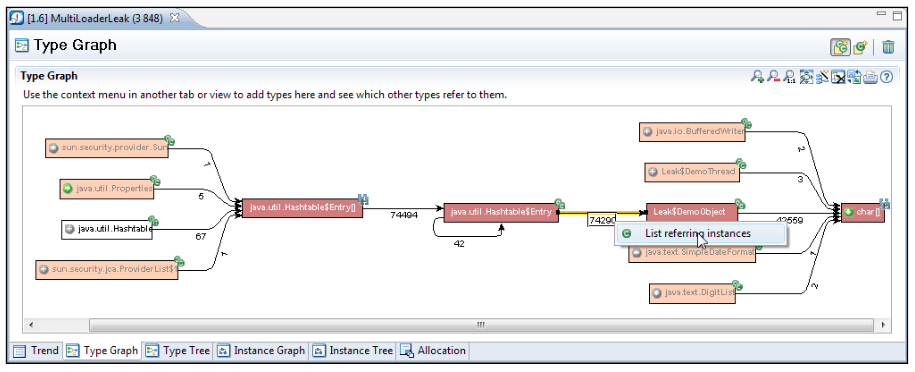
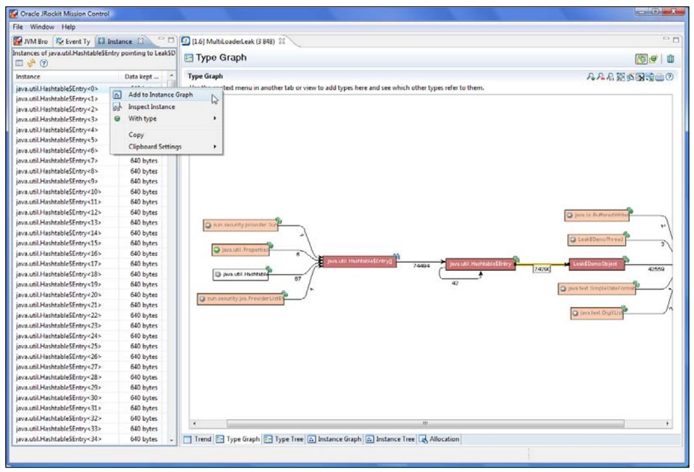
这样，就会在Memleak编辑器左侧打开实例视图，在其中列出指向Leak$DemoObject实例的Hashtable$Entry实例。右键点击其中某个实例，选择Add to Instance Graph菜单。这时会显示出一个类似于Type Graph的图像，只不过其内容是各个实例之间的引用关系。
在有了 Instance Graph之后，接下来就是要找出到底是哪些对象引用了这些无用实例。在之前版本的Memleak中，这可以不是个容易的活，尤其是当对象的引用关系非常复杂时，那简直是一场灾难。到JRockit Mission Control 4.0.0时，就可以通过可选菜单来使JRockit自动查找对象的引用路径了。只需右键单击目标实例，选择 Expand to Root菜单，即可显示出对该实例的完整引用路径。如下图所示：
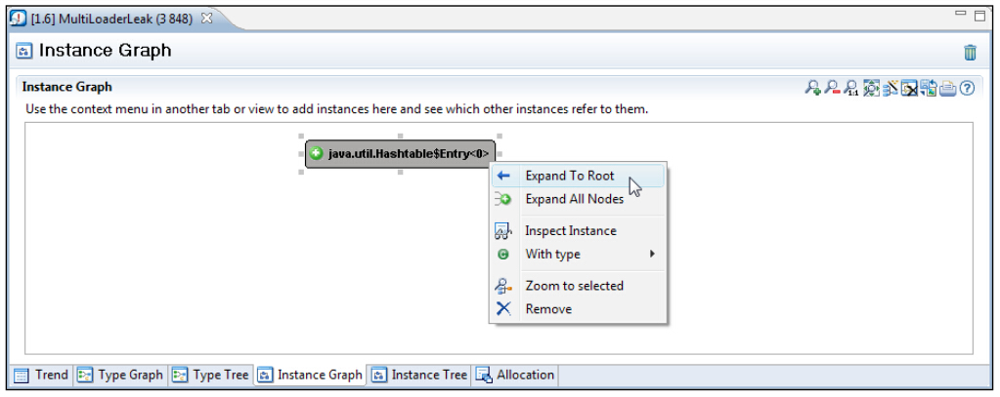
正如截图所示，在展开的节点中可以看到，有一个名为 Thread-2的线程持有对DemoThread类实例的引用，而DemoThread类的实例变量table中引用了Hashtable类的实例。
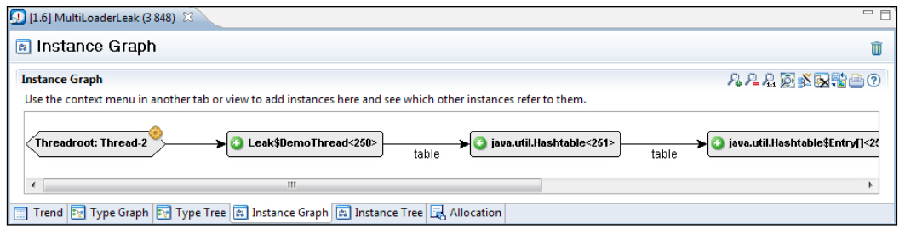
When running in Eclipse, it is possible to view the code that manipulates the table field, by selecting View Type Source from the context menu on the Leak$DemoThread nodes. In this example, we'd find a programming error:
通过Eclipse，可以右键单击Leak$DemoObject对象，从上下文菜单中选择View Type Source菜单来查看相应的代码。在本例中，代码如下：
for (int i = 0; i <= 100; i++) {
put(total + i);
}
for (int i = 0; i < 100; i++) {
remove(total + i);
}在这两个循环中，remove方法所移除的对象少于put方法所加入的对象，从而造成了内存泄漏。
本章中所使用到的示例应用程序可以在随书代码中找到。
总的来说，追查内存泄漏问题有以下4个要点：
- 找到那些被 泄漏的实例；
- 找出这些对象的引用路径；
- 剔除造成内存泄漏的引用关系；
- 如果还有内存泄漏的话，从1开始再来一遍。
当然，要找出那些被 泄漏的实例并非易事。方法之一就是只追查处于特殊引用关系的实例。在上面的示例中，就是通过字符数组类型追查到DemoObject类的。
集合类很容易被误用，进而造成内存泄漏。很多集合类是以数组实现的，如果不能正确评估使用场景，则很有可能会使数组变得越来越大。因此，另一个查找内存泄漏的方法就是列出系统中占用内存最大的数组，例如右键单击Hashtable$Entry数组，选择 List Largest Arrays菜单即可。
如果这两种方式都不好使，那么就只能等应用程序再多运行一段时间来判断了，随着应用程序的运行，会有更多的内存被无法释放的对象消耗掉。
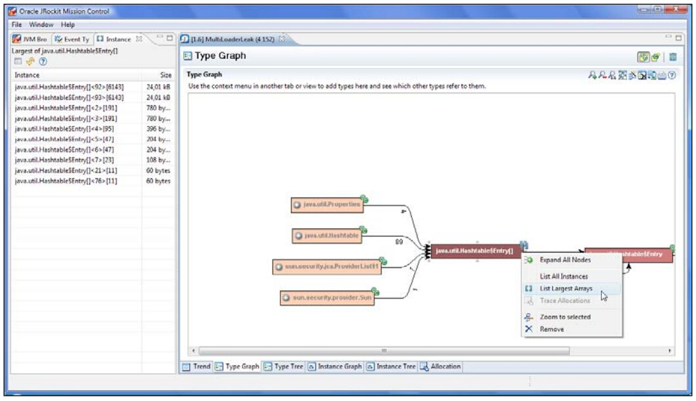
占用内存最大的两个HashTable$Entry类的实例，就是内存泄漏的根源。将其中的一个添加到Instance Graph，并展开其引用路径，可以看到Leak$DemoThread类的table属性指向了Hashtable类的实例。如图所示：
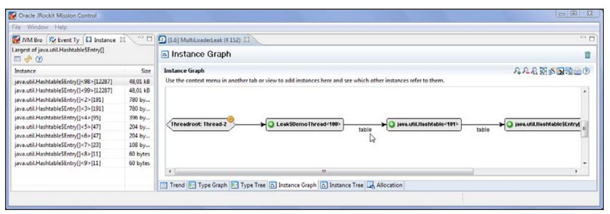
10.4.1 与类载入器相关的信息
在下面的示例中，共有3个类载入器来运行两段几乎完全一样的代码，执行结果是，1个运行正常，2个内存泄漏。像JRockit Mission Control套件中的其他工具一样，充分挖掘Memleak中的展示图表内容，可以收获很多游泳的信息。例如，通过 表设置中的配置，可以看到类载入器的相关信息。如下图所示：
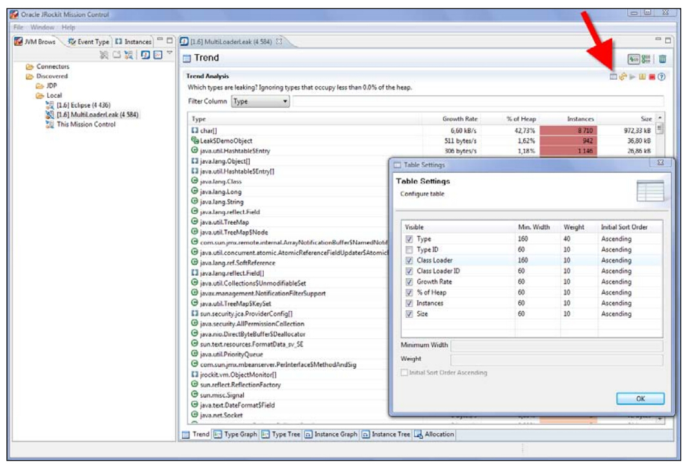
默认情况下，Memleak是在一行中显示某个类的汇总信息。若想区别显示不同类加载器下类的汇总信息，点击 Individually show each loaded class按钮即可，就在刷新按钮的旁边。。
在下面的截图中，列出了类名中含有Demo字符串的类，其中涉及到3种不同的类载入器，但其中的2种很有可能出现了内存泄漏。
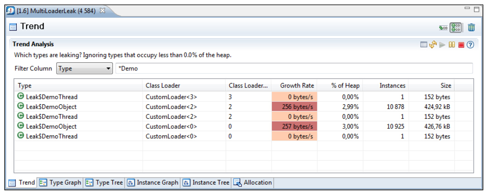
在 Type Graph中也可以按照类载入器分开展示，只需点击右上角的 Use a separate node for each loaded class按钮即可。如下图所示，分开之后，会按照不同的类载入器分别显示引用了字符数组的类型，其中类名后括号内的数字就是类载入器ID。
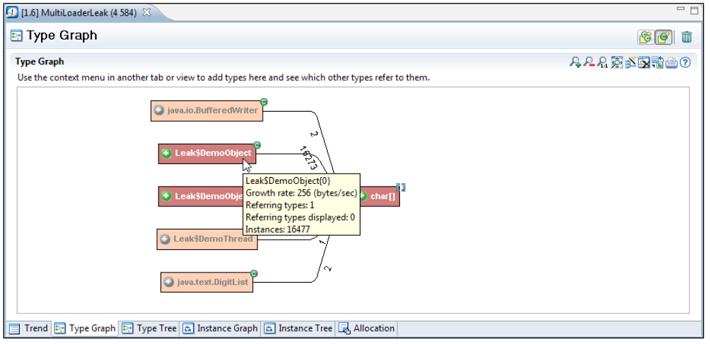
此外，点击右上角的 Combine classes with same class name按钮，可以切换回只针对类的汇总信息。这里在进行显示样式的切换时，并不会改变当前可见节点的任何状态，只会对还未展开的节点产生影响。